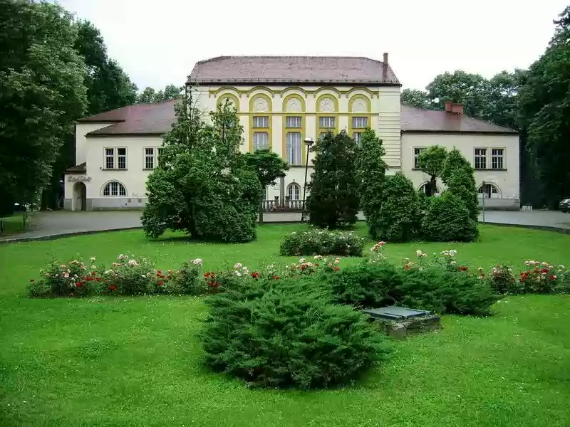

SRBIJA
Banja Koviljača se nalazi u zapadnom delu Srbije, u regionu Podrinja. Smeštena je na desnoj obali reke Drine, u podnožju planine Gučevo, na nadmorskoj
visini od 125 m. Do Banje Koviljače se stiže magistralnim putem Ruma-Šabac-Loznica. Od Loznice je udaljena 6 km, a od Beograda 142 km.

Arheološkim istraživanjima je utvrđeno da je područje Banje Koviljače bilo naseljeno još u rimsko doba. U srednjem veku, pod zidinama Koviljkinog
grada, narod ovog kraja je pohodio izvore lekovite vode. U 17. veku bogati Turci iz Mačve i Podrinja dolaze u Banju na oporavak, a 1720. ovde podižu
prvi ženski hamam. Banja je u narodu bila poznata kao „Smrdan banja“, zbog neprijatnih isparenja iz bare sa blatom, nastale od izvora sumporovite vode.
Moderan koncept banjskog mesta počinje izgradnjom sumpornog kupatila 1907.
Sumporovite mineralne vode (temperature 15-28°C) i lekovito blato predstavljaju prirodne lekovite faktore Banje Koviljače. Lečenje se sprovodi u
Specijalnoj bolnici za rehabilitaciju Banja Koviljača, uz primenu hidroterapije, peloidoterapije, magnetoterapije, manuelnom, podvodnom i
vibromasažom..
U Banji Koviljači se leče: